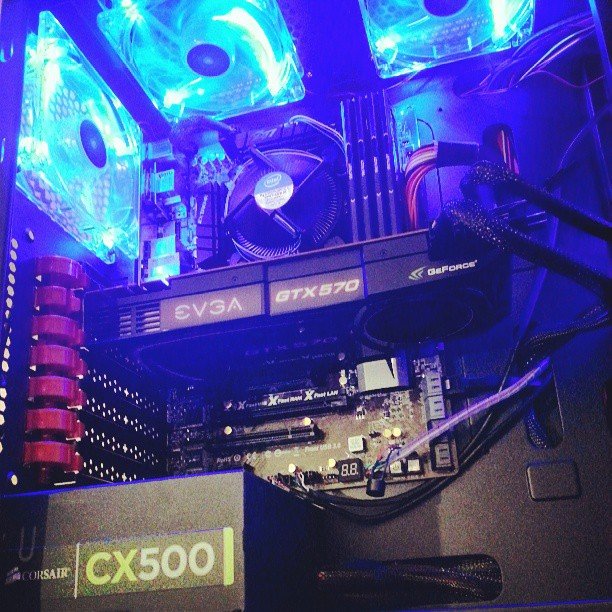

Practically my whole life story...
Hello! My name is Danyal Fiza. The following story is my self-taught journey to becoming a student of computer programming.
As a young human, I was endlessly fascinated by computers and technology. My fascination can be traced back to 1999, in a little store called “Best Buy.” My family was in need of a computer featuring the capabilities necessary for my older brothers’ school projects. Strolling through all of the Windows 95 machines, I felt so small. These big, gray machines towered my 7 year-old frame. As my siblings finally chose their machine and reached checkout, I remember staring at the large box as if it was a Christmas present just waiting to be unwrapped of its potential. And ever since, I was hooked, or wired.
Little did I know this Windows 95 machine would be the first computer I would learn to experiment and explore my passion. With 512MB of ram, 8GB worth of hard drive space, this computer roared with seemingly infinite capabilities; it dueled as an engine and my classroom. Fast-forward years of adolescence and computer advancements, I was spending more and more time on my computer soaking up all the new technology and its inner workings.
At 12, my brother facilitated my computer science experience with the introduction to Adobe Photoshop. Beginning with the basics, I photo-shopped cars and googled car tutorials, until the day I found myself rapt in the search for website templates tutorials. From there on, I learned HTML code. Realizing that was insufficient education, I was left unsatisfied with the resulting ugly website creations. With the web as my teacher, I was driven to learn more about computer programming. The more I googled, the more I learned and was able to teach myself how to program all the tests and projects from my child to my adult years.
After enrolling at UNC, I admittedly did not know what I wanted to do. Yet, I realized one consistent thing in my life: computers. My love for computers and interest in their inter-workings stayed constant though out my studies. During my freshman year, I decided to take COMP 101: Intro to Programming, and I loved it! It was the best class I’d taken because it fulfilled my curiosity and passions for technology and offered a valuable skill set for my future. As I explored other areas of study (science and business), nothing stuck to me more than the COMP classes. At last, I decided to pursue my love of computer science. Now, I am excited to continue my journey and progress as a web designer, developer, and engineer!
Thank you for visiting my website! I'd love to hear what you think so feel free to contact me!
Email: danfiza@danyalfiza.com
Danyal Fiza
My Rig:
This would be the powerhouse I work out of, built in the summer of 2013 I am proud of bringing it together.
Specs:Sentey Extreme Division GS-6410 ARVINA PLUS Full Tower Computer Case, ASRock Z77 Extreme4 ATX Intel Motherboard, Intel Core i5-3570K Ivy Bridge Quad Core 3.4Ghz CPU,Western Digital 1TB 7200 RPM 64MB Cache SATA 6.0Gb/s HD, EVGA GeForce GTX 570 (Fermi) 1280MB GPU, and 16GB of Patriot Viper 3 2133MHz Memory.
